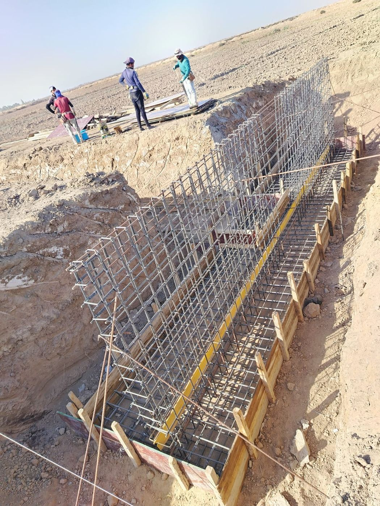
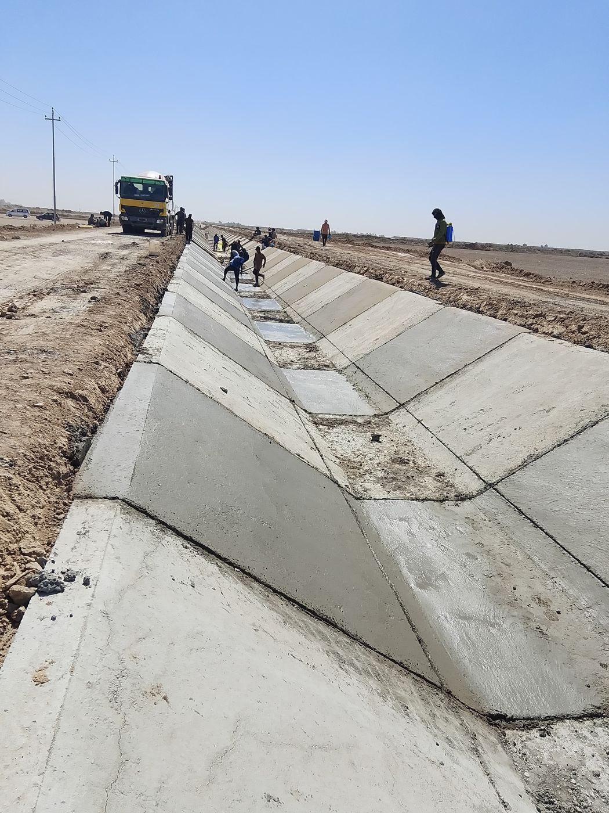
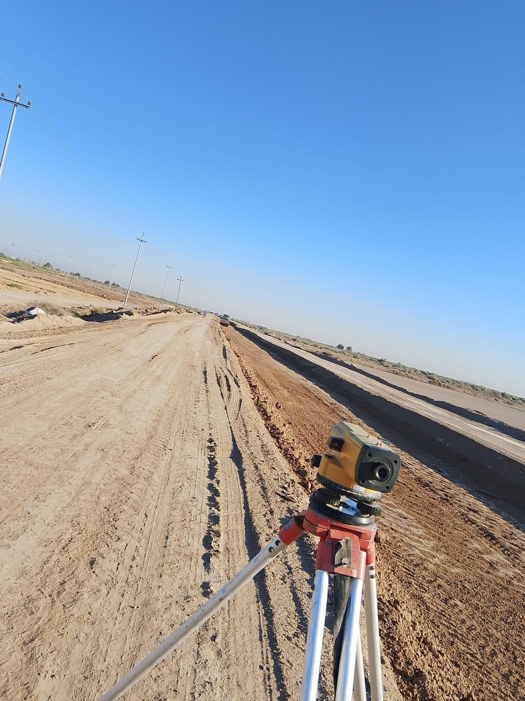
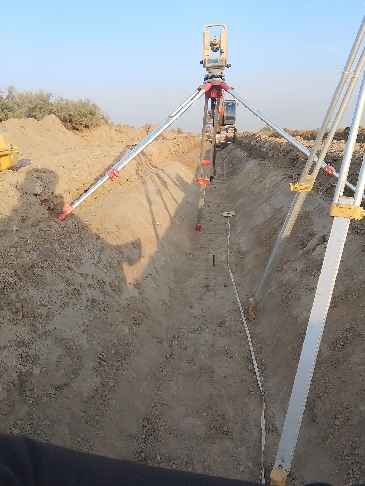
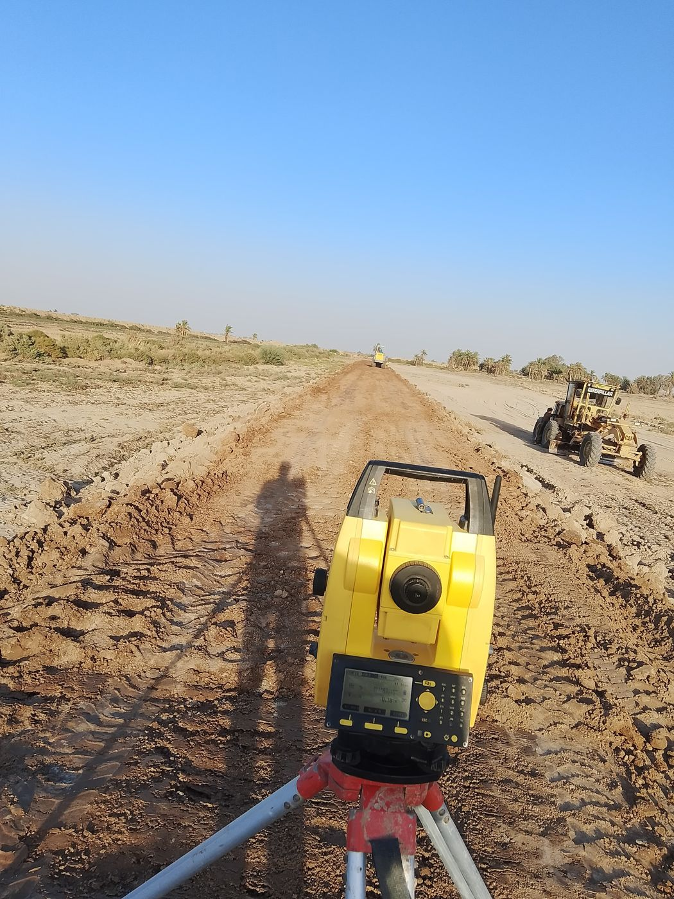

M.Sc. civil engineer with hands-on delivery of canal, drainage and hydraulic-structure projects for Iraq's Ministry of Water Resources. Managing the site, the measurement and the money, with AI and code to do it faster and with fewer errors.
Nahi Kareem Kazim Company · Ministry of Water Resources, Iraq
Right bank of the Tigris, Sheikh Saad to Al-Kut. Pump stations, concrete-lined canals, subsurface leaching networks and service roads across a 40 km corridor.
Irrigation canals, main and branch drains, box culverts, water intakes, regulators and agricultural access roads to combat soil salinity.
In Iraqi practice the project engineer and manager measure, certify and defend quantities. I do, and I automate it.
Take-offs from drawings and survey data for earthworks, lined canals, RC culverts and intakes; monthly interim payment certificates and subcontractor valuations.
Pricing and defending change orders, time-extension justifications and phase-2 proposals before ministry authorities.
Python and SQL tools for cut/fill sections and BOQ matching. Monthly reporting went from weeks to seconds.
WBS, scheduling (Primavera P6, MS Project), earned value and progress tracking tied to the QS data.
I use AI and code to finish engineering work faster and more accurately.
My browser-based BIM app: model and design reinforced-concrete and steel structures, then analyse and design in one place.
RC designSteelAnalysisBIMPlain-language search that returns verified drawings and test sheets to engineers on site in seconds.
Centralised system for accounting, equipment maintenance, warehouse, procurement and HR, replacing spreadsheet workflows.
RC design and analysis with ETABS and WebSketch 3D.
Built from Iraqi Al-Furat Center standard drawings. Drag to rotate, use the panel to change dimensions, or open full screen.
Photos from my projects.





Full detail in the CV.
Kut-Betera and West Gharraf projects, QS automation, ERP and site dashboards.
152 m reinforced-concrete syphon, 8 box units, 400,000 m³ earthworks; QS and shop drawings.
Sediment-transport model of the Kinta River with NAHRIM.
11 km canal, 80 km distribution network, 130 km closed conduits.
Education: M.Sc. Environmental Engineering, Universiti Sains Malaysia (2023) · B.Sc. Civil Engineering, Cihan University (2018)